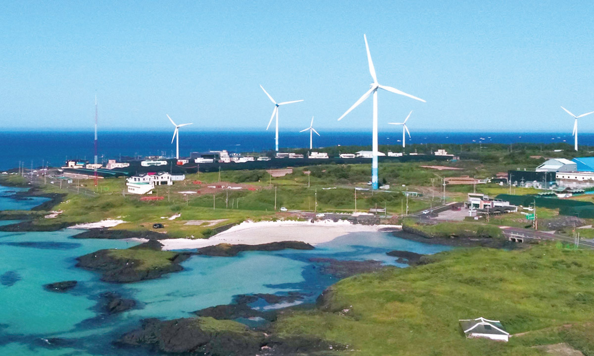
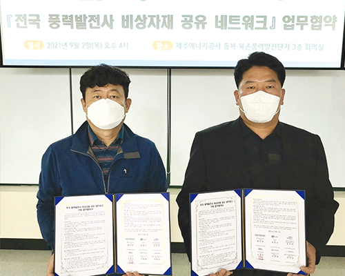
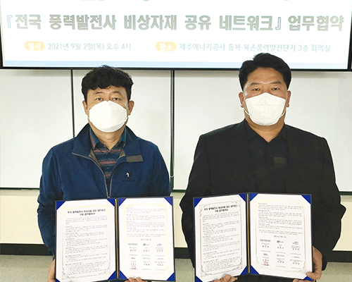

신재생에너지 혁신
붐업(Boom-Up)
국내 최초
‘풍력발전기 비상 자재 공유 네트워크’ 구축
제주에너지공사는 ‘탄소 없는 섬, 제주’ 조성 및 풍력자원의 공공적 관리를 목표로 2012년 7월 설립된 지방공기업으로 신재생에너지 개발 및 보급, 석유·가스·열 공급, 스마트에너지시티 구축, 전기차 충전, 에너지 이용 효율화 등 에너지 전 분야 대상 사업을 계획 및 추진하고 있다.
글 정기훈(제주에너지공사 기획관리팀 대리)

제주에너지공사의 신재생에너지 기술 개발 노력
제주에너지공사(이하 공사)는 신규 육·해상 풍력발전단지 조성사업을 추진하고 있으며, 친환경적인 에너지를 생산하기 위한 풍력발전 40기(56.83MW), 태양광(약 1.5MW)을 운영 관리하고 있다.
조직 내 지역에너지연구센터를 두고 정부 주도의 신재생에너지 관련 신기술 및 정책연구 사업으로 부유식 해상풍력, P2G 실증 사업 등의 연구과제를 수행하고 있으며, 전기차 충전 인프라 구축 및 운영 대행사업을 수행함으로써 도내 전기차 보급 활성화를 위해 노력하고 있다.
이뿐만 아니라 제주도민들과 도내 사회적 상생협력을 실현하고자 취약계층 대상 전기요금 지원사업, 학교 숲 조성사업, 초록산타 봉사활동, 코로나19 방역 물품 지원, 백혈병 소아암 치료비 지원, 클래식 기타 콩쿠르 등 다각적이고 지속적인 사회공헌 사업을 추진하며 임직원들의 자발적인 나눔문화를 조성하고 있다.
신재생에너지 전력판매대금(SMP) 하락 등에 따른 대응
코로나19 장기화 및 유가의 지속적인 하락과 도내 잉여전력 증가에 따른 발전기 출력제한 조치로 인하여 공사는 2020년, 설립 이래 유례없는 매출에 타격을 받았다.
이러한 위기를 이겨내고자, 출력제약 제도 개선, P2G(Power to Gas), 비상자재 공유 네트워크 등 다각적인 측면에서 매출 증대 및 지역 상생을 위하여 대응하고 있다.
도내 풍력발전 출력제약 판매손실 보전 위원회 운영
전기에너지는 수요와 공급이 실시간으로 균형이 맞춰져야 한다. 제주도 내 전체 발전설비 대비 38%를 차지하는 신재생 발전설비로 인해 화력과 LNG 등 기저 발전을 최소화해도 전력이 수요를 초과하여 공급하게 되면, 풍력발전을 차단하게 된다. 이러한 조치를 출력제약이라고 한다.
공사는 2021년 4월, 출력제약에 대해 제도 개선, 플러스DR 등 다양한 해결책 마련 및 논의를 위해 도내 풍력발전사업자와 ‘제주 풍력발전 출력제약 판매손실 보전 위원회’를 구성하여 운영하고 있다.
국내 최초 풍력발전기 비상자재 공유 네트워크 구축
풍력발전기는 수천개의 부품이 유기적으로 연결되며, 고장복구를 위해서는 이에 해당하는 예비자재의 마련이 필요하나 현실적으로 불가능하다.
주요 부품의 경우 해외에서 제작하여 국내로 들여오는 데 장기간 소요되며, 이에 따라 소규모 풍력발전사는 예비품 확보와 관리에 굉장한 어려움이 발생한다.
이에 공사는 전국 6개 풍력발전사 ‘비상자재 공유 네트워크 구축 업무협약’ 체결을 통하여 풍력발전기 고장 시 발전사 간 자재를 공유하여 자재 수급처 다각화의 효과와 주기적으로 고장 대응 방법 등 운영 정보 공유 및 기술협력 체계를 마련하였다.
실례로 협약기관 중 한 기관의 발전기 부품 고장으로 비상 자재를 요청했고, 당일 자재를 공유해 가동률 30%p, 이용률 7%p 향상, 1억 4천만 원 전력판매금 손실 보전 성과를 냈다.
발전단지 지역 활성화 노력 및 육·해상 풍력사업 추진에 따른 주민수용성 확보
CFI 기술투어 코스 마련 및 홍보로 지역경제 활성화 기여
탄소 없는 섬, 제주 2030(CFI2030) 정책과 신재생에너지를 보다 많은 국민들에게 알리기 위한 효율적인 홍보 방안을 마련하고, 환경오염 등의 이슈로 인한 친환경 콘텐츠와 코로나19로 인한 안심 관광 콘텐츠 수요 증가에 따라 ‘CFI 기술투어 코스’ 총 4가지를 마련하여 신재생에너지 발전시설을 관광단지로 탈바꿈하고 마을지역의 상생발전 기회를 마련하였다.
시공간을 초월한 주민수용성 채널 강화
코로나19의 장기화에 따른 ‘사회적 거리두기 시행’으로 범국민적 위기 상황 속에서도 공사는 주민들과의 원활한 의사소통과 풍력발전 개발사업의 적기 추진을 위하여 발전단지 유치마을 대상 주요 정보 전달과 온·오프라인을 활용한 소통을 시도하였다.
주요 풍력사업 정책 및 제도의 최신동향기사, 국내외 기술 및 시장 동향기사, 국내외 풍력발전 개발 사례 현황 동향 등 내용을 담은 ‘최신 풍력사업 동향’ 주간 단위 리뷰지를 마을 및 관계기관에 SNS 등 온라인 채널을 통하여 총 56회 공유하고 다양한 이해관계자의 사업 이해도를 증진시켰다.
오프라인 채널로는 구좌 풍력발전사업 출장소를 총 25회 운영하여 주민, 관계기관 등 이해관계자 면담 및 회의공간을 구성하고, ‘누구나 알기 쉬운 해상풍력 발전사업 핸드북’ 배포로 주민들의 해상풍력발전사업에 대한 이해부터 의견 반영 절차, 협조사항, 마을 지원계획, 어업손실 보상, 지역 환경 보호 등 궁금점을 해결하여 주민수용성을 크게 증진시켰다.
그 결과 공사는 공사 최초 공공주도 한동·평대 해상풍력발전사업 환경영향평가 제주특별자치도의회 통과로 6,000억 원 규모의 사업권을 확보하고, 12조 원 규모의 CFI 중장기 계획의 첫 신호탄을 날렸다.
 

2022년 제주에너지공사가 중점으로 삼고자 하는 사업
공사는 2022년 목표로 현재 진행 중인 한동·평대 해상풍력 개발사업, 보롬왓 육상풍력 개발사업의 착공과 월정·행월 해상풍력발전지구 지정 등 공공주도 육·해상풍력발전사업을 신속하게 추진할 계획이다.
또한 RE100제도 등을 활용한 장기고정계약 추진, 공사 재무구조 정상화, 출력제약을 해결하기 위해 출력안정화 ESS설치와 그린수소 생산시스템 구축 후 실증 운영할 예정이며, 도내 전기차 확대·보급 기반 조성을 위해 EV융복합스테이션과 제주지역 전기차 충전인프라를 구축하는 등 다각적인 신재생에너지 사업의 지속적인 노력을 기울여 나아갈 예정이다.
제주에너지공사 황우현 사장
“공사는 2021년 코로나19 확산과 적자 경영 위기까지 많은 어려움이 한꺼번에 있었습니다. 그럼에도 경영혁신을 이끌어내며 적자 1년 만에 흑자로 전환했으며, 풍력설비 가동률을 향상 시켜 수익성과 기술력 두 마리 토끼를 모두 손에 잡는 영예를 안았습니다. 2022년 제주에너지공사는 호랑이처럼 도전하는 정신으로 과거와는 다른 새로운 도전의 역사를 쓰게 될 것입니다.”